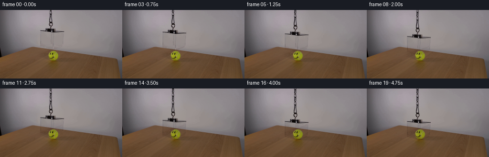
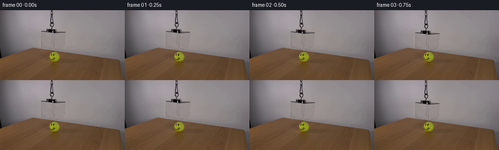

CODING AGENTS AS PIXEL WORLD MODELS
traex/GPT-6.1-Sol · 0099
点击播放 · 原生 RGB 像素
逐轮保存的候选
回放视频、检查图与代码变化。
每份候选均可单独播放。实际图片检查记录在下方工具轨迹中。
候选 01播放与检查图
点击播放 · 原生 RGB 像素


展开代码变化
--- 上一保存版本
+++ 本次保存版本
@@ -0,0 +1,110 @@
+"""Make a locked-camera, transparent-acrylic lowering demonstration."""
+from pathlib import Path
+import numpy as np
+import cv2
+from PIL import Image, ImageDraw, ImageFilter
+import artifact_io
+
+ROOT = Path(__file__).resolve().parent
+H, W = 144, 256
+
+def polygon_mask(points, blur=0.35):
+ scale=4
+ a=Image.new('L',(W*scale,H*scale),0)
+ ImageDraw.Draw(a).polygon([(round(x*scale),round(y*scale)) for x,y in points],fill=255)
+ if blur:
+ a=a.filter(ImageFilter.GaussianBlur(blur*scale))
+ return np.asarray(a.resize((W,H),Image.Resampling.LANCZOS),dtype=np.float32)/255
+
+def generate():
+ image=np.asarray(Image.open(ROOT/'first_frame.png').convert('RGB'),dtype=np.uint8)
+ source=image.astype(np.float32)
+ yy,xx=np.mgrid[:H,:W].astype(np.float32)
+
+ # Recover the unobstructed, softly illuminated wall from surrounding pixels.
+ x=(xx-110)/70
+ y=(yy-40)/50
+ basis=np.stack([x**i*y**j for i in range(6) for j in range(6-i)],axis=-1)
+ sample=(xx>44)&(xx<191)&(yy<75)
+ sample &= ~((xx>=82)&(xx<=137)&(yy>=37))
+ sample &= ~((xx>=99)&(xx<=115)&(yy<=39))
+ coefficient=np.linalg.lstsq(basis[sample],source[sample],rcond=None)[0]
+ wall=basis@coefficient
+ # Very faint stationary texture makes the reconstructed area match the image.
+ rng=np.random.default_rng(199)
+ grain=rng.normal(0,0.35,(H,W,1)).astype(np.float32)
+ wall=np.clip(wall+grain,0,255)
+
+ # The clear box is a rigid optical layer, not a crop of its background.
+ enclosure=polygon_mask([(83.5,42.0),(105.5,37.8),(134.5,44.0),
+ (132.2,74.7),(111.4,83.0),(83.7,76.0)])
+ fixture=polygon_mask([(93.7,37.5),(116.8,38.4),(117.8,46.9),(94.0,46.0)])
+ box=np.maximum(enclosure,fixture)
+ cord=polygon_mask([(100.5,-3),(113.0,-3),(112.0,32.5),(110.0,37.9),
+ (103.4,39.1),(100.0,29.0)],0.35)
+ removal=np.maximum(box,cord)
+ clean=source*(1-removal[...,None])+wall*removal[...,None]
+
+ # Multiplicative transmission preserves the tennis ball and the wooden grain
+ # seen through the box, while carrying the original acrylic rim highlights.
+ transfer=source/np.maximum(clean,1)
+ box_transfer=1+(transfer-1)*box[...,None]
+ # At the fixture/cord join assign the tiny overlapping area to only one layer.
+ cord_only=cord*(1-box)
+ cord_transfer=1+(transfer-1)*cord_only[...,None]
+
+ # A subtle contact shadow on the tabletop appears as the open bottom lands.
+ shadow_poly=[(84.5,101.2),(105.5,95.2),(132.5,101.0),(111.5,108.9)]
+ s=4
+ contact=Image.new('L',(W*s,H*s),0)
+ d=ImageDraw.Draw(contact)
+ d.line([(round(a*s),round(b*s)) for a,b in shadow_poly+[shadow_poly[0]]],
+ fill=255,width=2)
+ contact=contact.filter(ImageFilter.GaussianBlur(0.65*s))
+ contact=np.asarray(contact.resize((W,H),Image.Resampling.LANCZOS),dtype=np.float32)/255
+ # The visible ball itself and its existing tight contact shadow do not move.
+ ball=((xx-112.0)/11.8)**2+((yy-96.0)/11.6)**2<1.0
+ contact[ball]=0
+
+ def displacement(t):
+ # Start and stop gently while the cord steadily pays out.
+ start=0.10
+ duration=3.95
+ ramp=0.48
+ u=np.clip(t-start,0,duration)
+ v=26.0/(duration-ramp)
+ if u<ramp:
+ dist=v*u*u/(2*ramp)
+ elif u<=duration-ramp:
+ dist=v*(u-ramp/2)
+ else:
+ remain=duration-u
+ dist=26.0-v*remain*remain/(2*ramp)
+ return float(dist)
+
+ frames=[]
+ for n in range(20):
+ if n==0:
+ frames.append(image.copy())
+ continue
+ distance=displacement(n/4)
+ map_y=yy-distance
+ optical=cv2.remap(box_transfer,xx,map_y,cv2.INTER_LINEAR,
+ borderMode=cv2.BORDER_CONSTANT,borderValue=(1,1,1))
+ # Original cord links travel with the suspended object. Newly visible
+ # cord comes into the frame from above; it uses the same local material.
+ cy=map_y.copy()
+ above=cy<0
+ cy[above]=np.mod(cy[above]+16,16)
+ rope=cv2.remap(cord_transfer,xx,cy,cv2.INTER_LINEAR,
+ borderMode=cv2.BORDER_CONSTANT,borderValue=(1,1,1))
+ contact_amount=np.clip((distance-19)/7,0,1)
+ result=clean*(1-(0.16*contact_amount)*contact[...,None])
+ result*=optical
+ result*=rope
+ frames.append(np.clip(np.rint(result),0,255).astype(np.uint8))
+ return np.stack(frames)
+
+if __name__=='__main__':
+ frames=generate()
+ artifact_io.save(frames,ROOT)
可观测工具轨迹
实际执行的命令与返回图片。
命令 1exit 0
/bin/bash -lc 'ls -la && cat prompt.txt && cat GENERATION_RULES.md'
命令 2exit 0
/bin/bash -lc "cat artifact_io.py && python - <<'PY'
from PIL import Image
import numpy as np
im=np.array(Image.open('first_frame.png'))
print(im.shape)
# rgb mean cells and ANSI? only numeric ascii brightness/color
for y in range(0,144,3):
s=''
for x in range(0,256,3):
r,g,b=im[y:y+3,x:x+3].mean((0,1))
if r>g*1.23 and r>b*1.35 and r>100: c='O'
elif g>r*1.12 and g>b*1.2:c='G'
elif r>160 and g>150 and b<g*.7:c='Y'
else:
v=(r+g+b)/3;c=' .:-=+*#%@'[int(v)//26 if v<255 else 9]
s+=c
print(f'{y:03d} '+s)
PY"命令 3exit 0
/bin/bash -lc "python - <<'PY'
from PIL import Image
import numpy as np, cv2
im=np.array(Image.open('first_frame.png')); v=cv2.cvtColor(im,cv2.COLOR_RGB2GRAY)
for box in [(65,0,145,80),(60,65,155,115)]:
x0,y0,x1,y1=box
print('BOX',box)
for y in range(y0,y1):
print(f'{y:03} '+''.join(' .,:;irsXA253hMHGS#9B&@'[min(21,int(z)*22//256)] for z in v[y,x0:x1]))
print('RGB grid central')
for y in [0,10,20,30,35,38,40,42,44,46,48,50,55,60,65,70,75,80,85,90,95,100,105]:
print(y,' '.join(f'{x}:{im[y,x].tolist()}' for x in [70,75,80,85,90,95,100,105,110,115,120,125,130,135,140]))
PY"命令 4exit 0
/bin/bash -lc "python - <<'PY'
import numpy as np
from PIL import Image
im=np.array(Image.open('first_frame.png'))
# foreground color coding
for y in range(32,89):
s=''
for x in range(78,140):
r,g,b=map(int,im[y,x]);v=(r+g+b)/3
if v<35:c='@'
elif v<65:c='#'
elif v<100:c='O'
elif r-g>18 and g-b>12:c='w'
elif v<120:c='x'
elif v<135:c='-'
elif v<145:c='.'
elif v<155:c=' '
elif v<165:c=':'
else:c=';'
s+=c
print(f'{y:03d} '+s)
print('row ranges bottom/lid')
for y in [38,39,40,41,42,43,44,45,46,47,48,60,70,75,76,77,78,79,80,81,82,83,84,85]:
print(y,[(x,im[y,x].tolist()) for x in range(81,136,2)])
PY"命令 5exit 0
/bin/bash -lc "mkdir -p .tmp && cat > .tmp/analyze.py <<'PY'
from PIL import Image
import numpy as np
im=np.array(Image.open('first_frame.png')).astype(float)
y,x=np.mgrid[:144,:256]
X=(x-110)/70;Y=(y-40)/50
terms=[X**i*Y**j for i in range(6) for j in range(6-i)]
A=np.stack(terms,-1)
m=(x>44)&(x<191)&(y<75)
m&=~((x>=82)&(x<=137)&(y>=37))
m&=~((x>=99)&(x<=115)&(y<=39))
bg=A@np.linalg.lstsq(A[m],im[m],rcond=None)[0]
res=(bg-im).mean(2)
for yy in range(36,84):
print(f'{yy:03} '+''.join('B' if z>80 else '#' if z>40 else 'O' if z>20 else 'x' if z>12 else '+' if z>7 else '.' if z>3 else '-' if z>0 else ' ' if z>-3 else '*' for z in res[yy,78:140]))
print('fit MAE',np.abs(bg[m]-im[m]).mean())
np.save('.tmp/wallfit.npy',bg)
for yy in [40,50,60,70,75,80]:print(yy,[(xx,bg[yy,xx].round(1).tolist()) for xx in [80,85,100,110,120,135]])
PY
python .tmp/analyze.py"命令 6exit 0
/bin/bash -lc "python - <<'PY'
from PIL import Image
import numpy as np
im=np.array(Image.open('first_frame.png')).astype(float); bg=np.load('.tmp/wallfit.npy');res=(bg-im).mean(2)
for y in range(38):
print(y, ''.join('@' if z>100 else '#' if z>70 else 'O' if z>35 else 'x' if z>15 else '+' if z>5 else ' ' for z in res[y,96:118]), [(x,im[y,x].astype(int).tolist()) for x in range(99,113) if res[y,x]>30])
PY"命令 7exit 0
/bin/bash -lc "python - <<'PY'
import numpy as np
from PIL import Image
im=np.array(Image.open('first_frame.png')).astype(float);bg=np.load('.tmp/wallfit.npy');r=(bg-im).mean(2)
for yy in range(68,83):
print(yy,' '.join(f'{int(z):2d}' for z in r[yy,82:134]))
PY"命令 8exit 0
/bin/bash -lc "python - <<'PY'
from PIL import Image
import numpy as np
im=np.array(Image.open('first_frame.png')).astype(float)
for x in range(0,256,5):
ratio=im[:,x,0]-im[:,x,1]
ys=np.where((ratio>17)&(np.arange(144)>55))[0]
if len(ys):print(x,ys[0],im[ys[0],x].astype(int).tolist())
PY"命令 9exit 0
/bin/bash -lc "cat > generate.py <<'PY'
\"\"\"Make a locked-camera, transparent-acrylic lowering demonstration.\"\"\"
from pathlib import Path
import numpy as np
import cv2
from PIL import Image, ImageDraw, ImageFilter
import artifact_io
ROOT = Path(__file__).resolve().parent
H, W = 144, 256
def polygon_mask(points, blur=0.35):
scale=4
a=Image.new('L',(W*scale,H*scale),0)
ImageDraw.Draw(a).polygon([(round(x*scale),round(y*scale)) for x,y in points],fill=255)
if blur:
a=a.filter(ImageFilter.GaussianBlur(blur*scale))
return np.asarray(a.resize((W,H),Image.Resampling.LANCZOS),dtype=np.float32)/255
def generate():
image=np.asarray(Image.open(ROOT/'first_frame.png').convert('RGB'),dtype=np.uint8)
source=image.astype(np.float32)
yy,xx=np.mgrid[:H,:W].astype(np.float32)
# Recover the unobstructed, softly illuminated wall from surrounding pixels.
x=(xx-110)/70
y=(yy-40)/50
basis=np.stack([x**i*y**j for i in range(6) for j in range(6-i)],axis=-1)
sample=(xx>44)&(xx<191)&(yy<75)
sample &= ~((xx>=82)&(xx<=137)&(yy>=37))
sample &= ~((xx>=99)&(xx<=115)&(yy<=39))
coefficient=np.linalg.lstsq(basis[sample],source[sample],rcond=None)[0]
wall=basis@coefficient
# Very faint stationary texture makes the reconstructed area match the image.
rng=np.random.default_rng(199)
grain=rng.normal(0,0.35,(H,W,1)).astype(np.float32)
wall=np.clip(wall+grain,0,255)
# The clear box is a rigid optical layer, not a crop of its background.
enclosure=polygon_mask([(83.5,42.0),(105.5,37.8),(134.5,44.0),
(132.2,74.7),(111.4,83.0),(83.7,76.0)])
fixture=polygon_mask([(93.7,37.5),(116.8,38.4),(117.8,46.9),(94.0,46.0)])
box=np.maximum(enclosure,fixture)
cord=polygon_mask([(100.5,-3),(113.0,-3),(112.0,32.5),(110.0,37.9),
(103.4,39.1),(100.0,29.0)],0.35)
removal=np.maximum(box,cord)
clean=source*(1-removal[...,None])+wall*removal[...,None]
# Multiplicative transmission preserves the tennis ball and the wooden grain
# seen through the box, while carrying the original acrylic rim highlights.
transfer=source/np.maximum(clean,1)
box_transfer=1+(transfer-1)*box[...,None]
# At the fixture/cord join assign the tiny overlapping area to only one layer.
cord_only=cord*(1-box)
cord_transfer=1+(transfer-1)*cord_only[...,None]
# A subtle contact shadow on the tabletop appears as the open bottom lands.
shadow_poly=[(84.5,101.2),(105.5,95.2),(132.5,101.0),(111.5,108.9)]
s=4
contact=Image.new('L',(W*s,H*s),0)
d=ImageDraw.Draw(contact)
d.line([(round(a*s),round(b*s)) for a,b in shadow_poly+[shadow_poly[0]]],
fill=255,width=2)
contact=contact.filter(ImageFilter.GaussianBlur(0.65*s))
contact=np.asarray(contact.resize((W,H),Image.Resampling.LANCZOS),dtype=np.float32)/255
# The visible ball itself and its existing tight contact shadow do not move.
ball=((xx-112.0)/11.8)**2+((yy-96.0)/11.6)**2<1.0
contact[ball]=0
def displacement(t):
# Start and stop gently while the cord steadily pays out.
start=0.10
duration=3.95
ramp=0.48
u=np.clip(t-start,0,duration)
v=26.0/(duration-ramp)
if u<ramp:
dist=v*u*u/(2*ramp)
elif u<=duration-ramp:
dist=v*(u-ramp/2)
else:
remain=duration-u
dist=26.0-v*remain*remain/(2*ramp)
return float(dist)
frames=[]
for n in range(20):
if n==0:
frames.append(image.copy())
continue
distance=displacement(n/4)
map_y=yy-distance
optical=cv2.remap(box_transfer,xx,map_y,cv2.INTER_LINEAR,
borderMode=cv2.BORDER_CONSTANT,borderValue=(1,1,1))
# Original cord links travel with the suspended object. Newly visible
# cord comes into the frame from above; it uses the same local material.
cy=map_y.copy()
above=cy<0
cy[above]=np.mod(cy[above]+16,16)
rope=cv2.remap(cord_transfer,xx,cy,cv2.INTER_LINEAR,
borderMode=cv2.BORDER_CONSTANT,borderValue=(1,1,1))
contact_amount=np.clip((distance-19)/7,0,1)
result=clean*(1-(0.16*contact_amount)*contact[...,None])
result*=optical
result*=rope
frames.append(np.clip(np.rint(result),0,255).astype(np.uint8))
return np.stack(frames)
if __name__=='__main__':
frames=generate()
artifact_io.save(frames,ROOT)
PY
python generate.py
python - <<'PY'
from PIL import Image
import numpy as np
im=np.array(Image.open('frames/19.png')); g=im.mean(2)
for y in range(36,113):
print(f'{y:03d} '+''.join(' .,:;irsXA253hMHGS#9B&@'[min(21,int(z)*22//256)] for z in g[y,78:140]))
print('frame0 identical',np.array_equal(np.array(Image.open('first_frame.png')),np.array(Image.open('frames/00.png'))))
PY"命令 10exit 0
/bin/bash -lc "python - <<'PY'
import numpy as np
from PIL import Image
A=np.array(Image.open('first_frame.png'));B=np.array(Image.open('frames/19.png'))
for y in [75,80,85,90,95,100,105]:print(y,[(x,A[y,x].tolist(),B[y,x].tolist()) for x in [85,100,105,110,115,120,130]])
for n in [1,2,5,10,15,19]:
b=np.array(Image.open(f'frames/{n:02d}.png')); d=np.abs(b.astype(int)-A.astype(int));print(n,'err',d.mean(),'outside',d[:,:80].max(),d[:,140:].max())
PY"保存候选 1 份；完成命令 10 次；可验证图片返回 0 张。原始 API 响应与完整日志保留在本地。